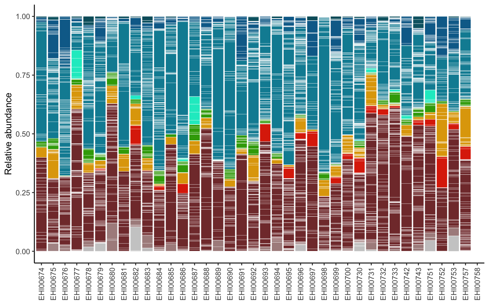

Chapter 6 Taxonomic composition
This workflow explores the taxonomic characteristics of the MAG catalogue across samples. Note the workflow relies on previous scripts, so make sure you go through the general pipeline before starting working on this document.
6.1 Taxonomy stacked barplot
count_table_cov_size_pivot <- count_table_cov_size %>%
rownames_to_column("Genome") %>%
mutate_at(vars(-Genome),~./sum(.)) %>% #apply TSS nornalisation
pivot_longer(-Genome, names_to = "sample", values_to = "count") %>% #reduce to minimum number of columns
left_join(., mags_table, by = join_by(Genome == genome)) %>% #append taxonomy
mutate(phylum = fct_relevel(phylum, rev(ehi_phylum_colors$phylum))) #sort phyla by taxonomy# Retrieve taxonomy colors to use standardised EHI colors
phylum_colors <- ehi_phylum_colors %>%
filter(phylum %in% unique(count_table_cov_size_pivot$phylum)) %>%
select(colors) %>%
pull() %>%
rev()
phylum_colors <- c(phylum_colors,"#cccccc") #REMOVE! ONLY FOR ARCHAEANS
# Plot stacked barplot
ggplot(count_table_cov_size_pivot, aes(x=sample,y=count,fill=phylum, group=phylum))+ #grouping enables keeping the same sorting of taxonomic units
geom_bar(stat="identity", colour="white", linewidth=0.1)+ #plot stacked bars with white borders
scale_fill_manual(values=phylum_colors) +
labs(y = "Relative abundance") +
guides(fill = guide_legend(ncol = 3)) +
theme(axis.text.x = element_text(angle = 90, vjust = 0.5, hjust=1),
axis.title.x = element_blank(),
panel.background = element_blank(),
panel.border = element_blank(),
panel.grid.major = element_blank(),
panel.grid.minor = element_blank(),
axis.line = element_line(linewidth = 0.5, linetype = "solid", colour = "black"),
legend.position="none",
legend.title=element_blank())